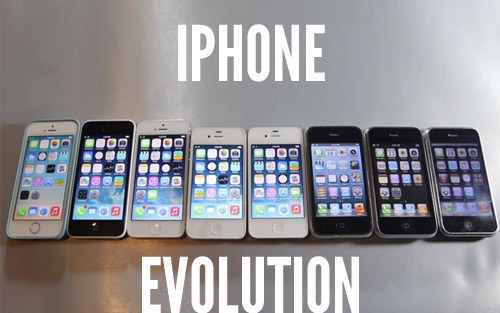

Hoje, com mais de 30 anos de história do Software livre e mais de 20 anos da criação da primeira versão do Linux, muita coisa mudou! Com o surgimento dessa revolucionária maneira de ver o mundo, novos modelos de negócio foram criados ou amadurecidos. Apresento-vos então 15 maneiras de conseguir sucesso com esta filosofia de vida e trabalho.
Sheldon Led
www.sheldonled.com
Uma questão de liberdade
- Usar para qualquer finalidade.
- Estudar e adaptar
- Redistribuir
- Aperfeiçoar e tornar isso público
- 15 motivos para usar Software Livre
- 15 maneiras de ganhar dinheiro com Software Livre
- Distribuição Livre
- Código Fonte
- Trabalhos Derivados
- Integridade do Autor
- Não discriminação contra pessoas ou grupos
- Não discriminação contra áreas de atuação
- Distribuição da Licença
- Licença não específica a um produto
- Licença não restrinja outros programas
- Licença neutra em relação à tecnologia
1 - Legalidade
- Software Livre não precisa de Crack
2 - Economia
- Para a maioria dos softwares pagos existem alternativas livres e gratuitas
- Ex:
- MS Office <> Libre Office
- Photoshop <> Gimp
- Illustrator <> Inkscape
3 - Segurança
- "Dados olhos suficientes, todos os erros são triviais" - Linus Torvalds
4 - Qualidade
- A comunidade não é feita só pelos desenvolvedores...
- ...Cada usuário é um membro da comunidade
- E ele pode ajudar:
- Testando e reportando erros;
- Enviando sugestões de melhoria;
- Respondendo dúvidas de usuários menos experientes
5 - Desempenho
- O Melhor desempenho vem do interior
6 - Personalização
- Nem sempre usamos algo do jeito que o manual manda.

7 - Liberdade

8 - Flexibilidade
- Softwares adaptáveis, de acordo à necessidade
- Acessibilidade
- Customização
- Adaptação
9 - Interoperabilidade
10 - Clareza

11 - Aprendizado

12 - Suporte Livre
Se o software é livre para uso e estudo, então qualquer pessoa pode ser capacitada para dar suporte

13 - Evolução
Não há necessidade de vender uma versão evoluída. Portanto a evolução é livre.
14 - Independência
- de fornecedor
- de versionamento (Você pode fazer sua versão)
- de uso

15 - Reuso
- Você pode aproveitar uma feature desenvolvida em um software n'outro.
Ganhar dinheiro com software livre
O Software Livre te ajuda a ganhar dinheiro direta ou indiretamente

Ganhar dinheiro com software livre
- Produzindo Software Livre
- Aplicando Software Livre
- Usando Software Livre
1 - Trabalhando em uma empresa que produz Software Livre
Ex:
- Linux Foundation
- Mozilla
- Red Hat...
2 - Produzir seu software e vendê-lo
- Software Livre não é necessariamente gratuito
- Hoje em dia, há formas melhores de ganhar dinheiro com software
- FSF encoraja a usar o termo "Distribuir por uma taxa"
3 - Produzir seu software, distribuí-lo gratuitamente e vender a implantação
Implantação de um software dentro de uma empresa é algo trabalhoso.
4 - Produzir seu software, distribuí-lo gratuitamente e vender treinamento
Ninguém gosta de ler manual ou documentação. É mais fácil pagar um curso
5 - Produzir seu software, distribuí-lo gratuitamente e vender suporte
Ser pago não por apertar o parafuso, mas saber qual parafuso apertar.
6 - Produzir seu software, distribuí-lo gratuitamente e vender customização
Ex:
- Colocar seu software no padrão de cores da empresa
- Adicionar novos padrões (9º dígito nos celulares)
- Integrar seu software com outro já existente na empresa.
7 - Produzir seu software, e ganhar dinheiro com publicidade
Ganhar dinheiro por clicks em anúncios, ou por apenas mostrar algum anúncio, etc.
8 - Produzir seu software, distribuir uma versão gratuita e outra versão paga (com licença não livre)
Ex:
- MySQL
- Red Hat
9 - Adicionar funcionalidades extras a um software pré-existente
Ex:
- Fazer Linux funcionar em caixas eletrônicos
- Adicionar regras novas em Firewall
- Adicionar login por digital, em algum Software Livre
10 - Loja Virtual*
Você pode produzir seu software e vender plugins ou add-ons para ele. Ex:
- WordPress/Joomla: Plugins e Temas
- Jogos: Armaduras, Armas, Territórios, Dinheiro virtual
- Navegadores: Firefox MarketPlace
11 - Vender consultoria livre
Consultoria Financeira, Gerencial, Legal ou de TI.
Ex:
- Auditoria legal de software
- Resolver problemas de controle financeiro usando algum SL
- Verificar que há problemas no Estoque e sugerir algum SL
- Fazer um levantamento de softwares que podem ser substituidos por Soluções Livre e Gratuitas
12 - Vender serviços
Ex:
- Serviços de Hospedagem,
- VPS,
- E-mail;
- Gestão de dados
13 - Instalando e gerenciando redes
- Configurar Firewall
- Proxy
- Aumentar a segurança de TI
- Controlar acessos dos colaboradores da empresa
14 - Trabalhando com conteúdo
Ex: Usar Software Livre para:
- Gerenciar um blog ou site,
- Produção Audiovisual
- Edição de Fotos e Vídeos
- Diagramação de revistas, jornais etc.
- Criar uma loja virtual
15 - Vender conhecimento
Ex:
- Vender cursos (empresa),
- Dar aulas (professor);
Fim
Sheldon Led
www.sheldonled.com
sheldonled.ms@gmail.com
@sheldonled